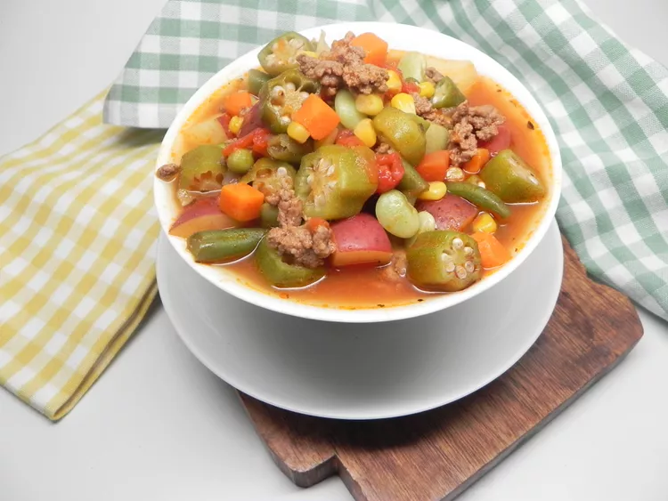

Granny's Okra Soup

Description
A delicious beef and vegetable soup that is a variation on
the okra and tomato-based soup my great-grandmother
used to make on the farm in Alabama. It's great with
fresh or canned veggies, works with just about any
alterations - I use fresh, locally-grown ingredients
and it's always amazing. All ingredient measurements are
approximate. The important thing about Granny's okra soup
is that the tomato is the main ingredient,
but okra, lima beans and potatoes are important too. Adding
or subtracting other vegetables to taste or based on
availability is perfectly acceptable.
Ingredients
- 4 cups chopped tomatoes
- 2 cups lima beans
- 2 cups chopped okra
- 2 cups chopped red potatoes
- 1 cup corn
- 1 cup green beans
- ½ cup chopped carrots
- 1 (6 ounce) can tomato paste
- 4 cups chicken stock
- 1 pound ground beef
- ½ tablespoon garlic powder
- ½ tablespoon celery salt
- ½ tablespoon onion powder
- 1 small onion, chopped
- 2 cloves garlic, crushed, or more to taste
- 3 tablespoons butter
Steps
-
Combine tomatoes, lima beans, okra, potatoes, corn, green
beans, carrots, and tomato paste in a large soup pot.
Pour chicken stock over mixture and bring to a boil over
medium heat. Reduce heat and simmer until
vegetables begin to soften, about 15 minutes.
- Season ground beef with garlic powder,
celery salt, and onion powder. Set aside.
- Heat butter in a skillet over medium-high heat.
Add onion and garlic when butter stops bubbling;
cook and stir for 1 minute. Spread ground beef evenly
in the pan. Cook until it has a nice brown sear,
stirring minimally to end up with mostly medium-sized
chunks, 5 to 7 minutes. Drain skillet
and add beef, onions, and garlic to the soup pot.
- Bring soup mixture to a boil; reduce heat to
simmer, cover, and cook until vegetables
and beef have cooked down, 1 to 2 hours.